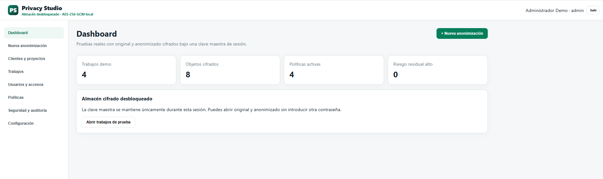
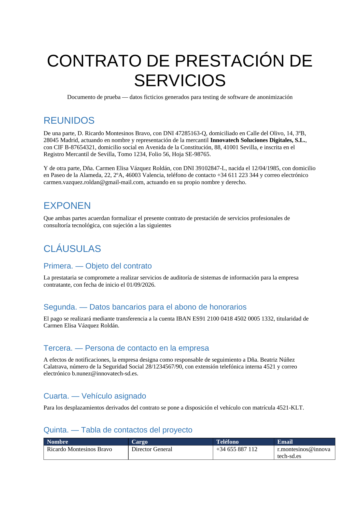
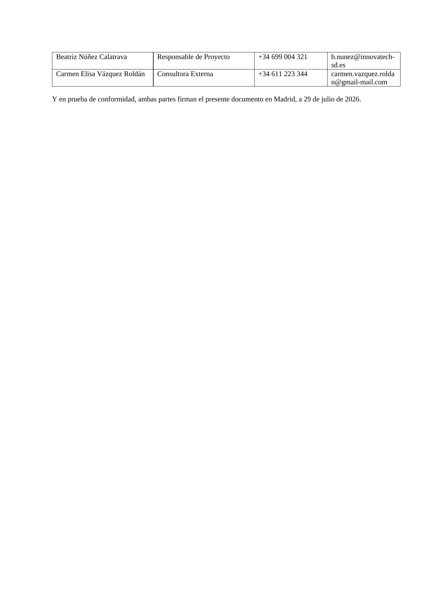
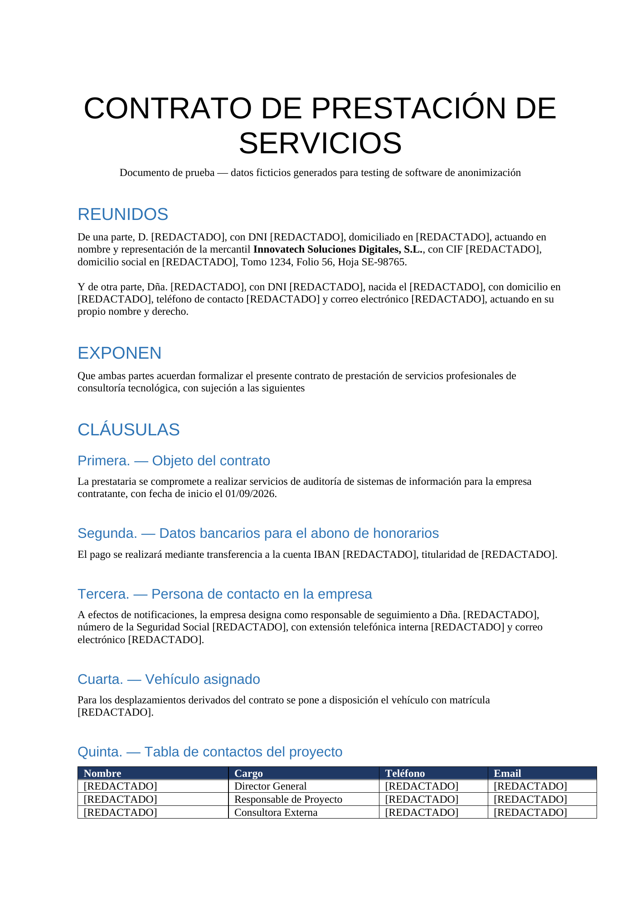
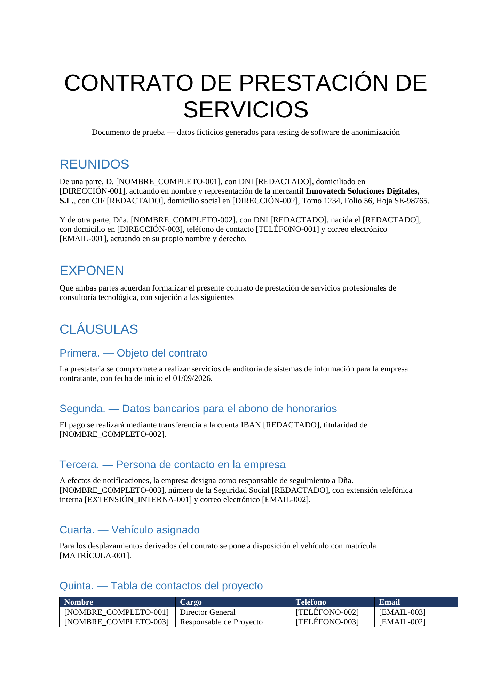
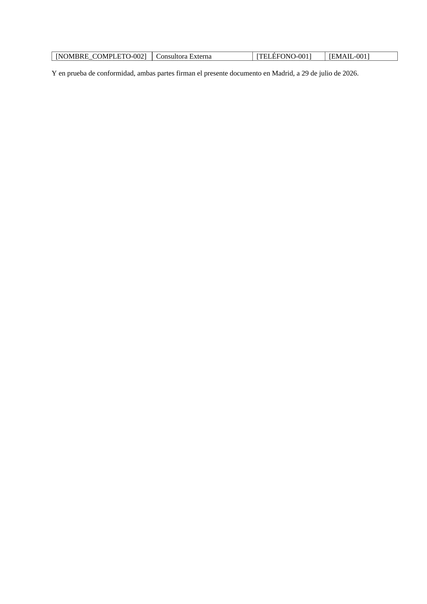
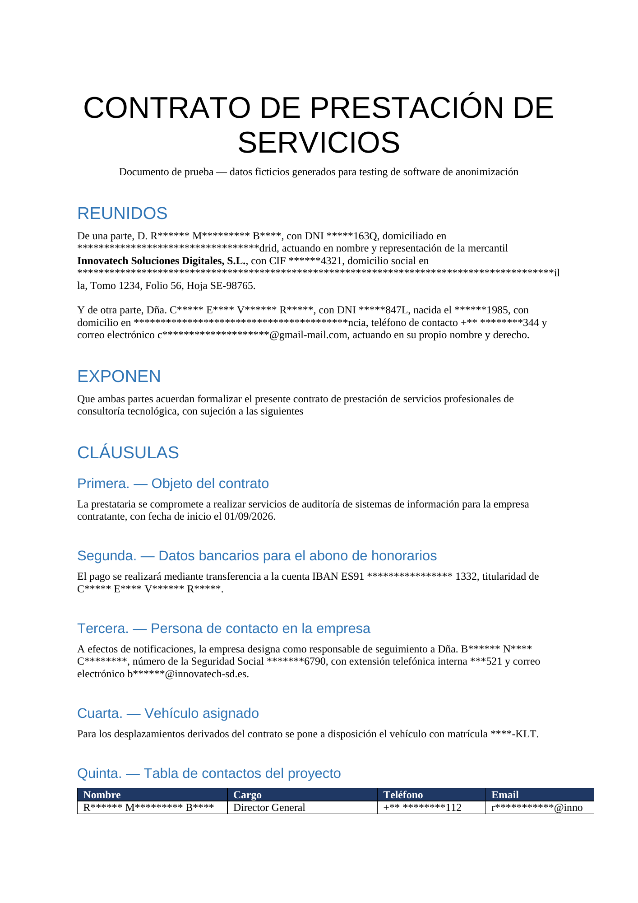
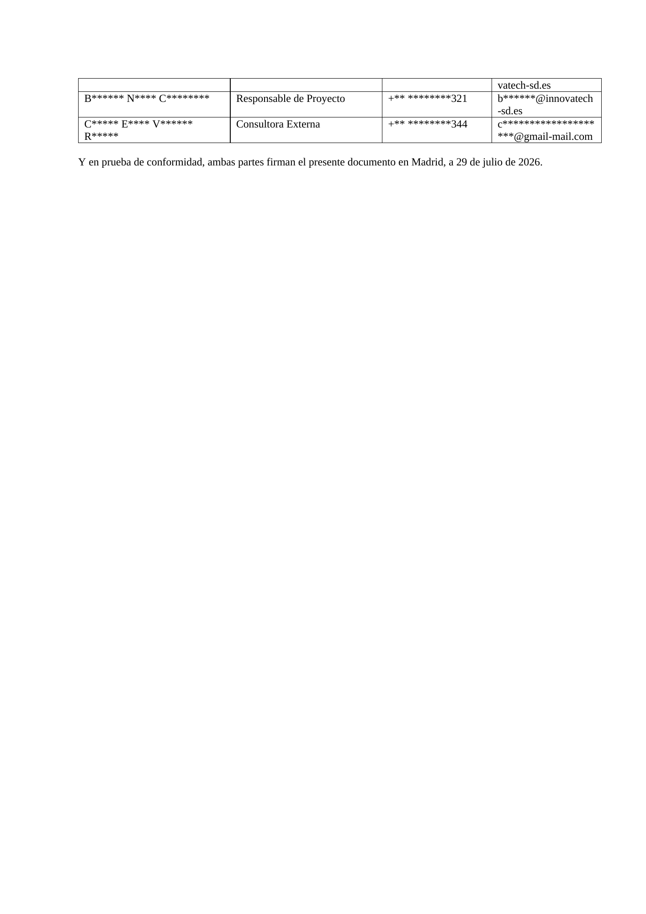
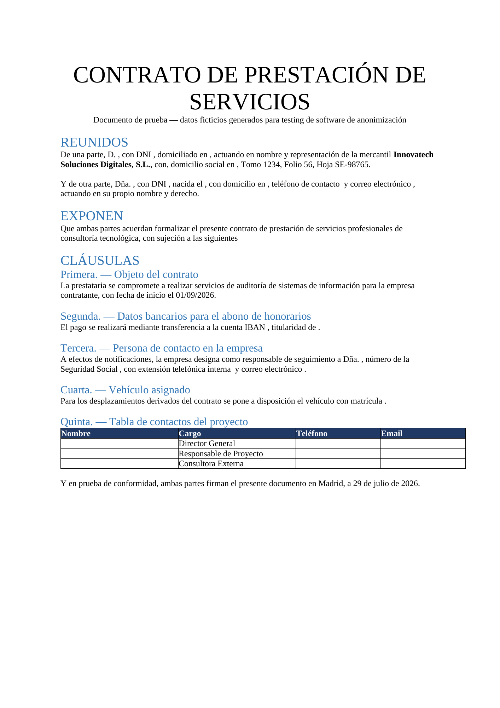

Workspace multi-cliente
Separa organizaciones, proyectos, trabajos, permisos y políticas.
Anonimización documental segura, trazable y adaptada al contexto.
Privacy Studio convierte la anonimización en un proceso guiado y gobernado: organiza clientes y proyectos, detecta datos personales, permite revisar cada hallazgo, aplica políticas diferenciadas y valida el resultado antes de cerrar el trabajo.
No se trata de sustituir texto de forma indiscriminada. Cada documento, finalidad y destinatario necesita una política coherente, revisión humana, trazabilidad y protección efectiva de la información.

Clientes, proyectos, políticas, detecciones, decisiones, documentos y evidencias comparten un mismo flujo trazable.
Separa organizaciones, proyectos, trabajos, permisos y políticas.
Identifica nombres, documentos, direcciones, teléfonos, correos, IBAN y otros patrones.
Confirma, descarta o cambia la técnica aplicada a cada hallazgo.
Enmascara, redacta, pseudonimiza o elimina según finalidad y riesgo.
Vuelve a analizar el resultado para detectar información remanente.
Registra política, decisiones, estados, integridad y cambios realizados.
Las siguientes pantallas muestran el funcionamiento actual del aplicativo y no únicamente los documentos generados.
Pantalla de acceso a Privacy Studio con presentación del producto, autenticación y entrada controlada al workspace.
La protección comienza antes de cargar cualquier documento: identidad, sesión y contexto deben estar resueltos.
El acceso debe integrarse con controles de sesión, separación de entornos y políticas de autenticación reforzada.
Resumen consolidado de trabajos, revisiones pendientes, documentos procesados y actividad reciente.
El dashboard debe mostrar qué requiere atención sin revelar contenido sensible innecesario.
Los indicadores deben proceder de metadatos y estados; nunca del texto en claro de los documentos.
Flujo guiado para seleccionar cliente, proyecto, política y documento antes de iniciar el análisis.
La finalidad de uso debe definirse antes de elegir la técnica de anonimización.
El trabajo debe registrar contexto, política, hash del origen, tipo de archivo y estado inicial.
Vista del documento con panel lateral de hallazgos agrupados y posibilidad de revisar cada detección.
La revisión humana evita que una coincidencia automática se convierta en una decisión irreversible.
Cada hallazgo necesita tipo, confianza, posición, acción seleccionada y trazabilidad de cambios.
Panel de detecciones con valores identificados, técnica aplicada y navegación directa sobre el documento.
El usuario debe entender qué se ha detectado y cómo quedará antes de generar el resultado.
Los cambios masivos deben ser consistentes, reversibles durante la sesión y auditables.
Organización de hallazgos por nombres, identificadores, organización, teléfono, fecha y otros tipos.
Agrupar reduce ruido y ayuda a revisar primero las categorías de mayor impacto.
El motor debe distinguir cabeceras, etiquetas y contexto para reducir falsos positivos.
Detalle de una categoría sensible con sus coincidencias y acciones disponibles.
Los identificadores oficiales requieren una política más restrictiva que otros datos de contexto.
Patrones, validaciones de formato y reglas contextuales deben combinarse para mejorar precisión.
Separación del trabajo por cliente y proyecto, con acceso al historial y creación de nuevas organizaciones.
La estructura cliente → proyecto → trabajo delimita propiedad, finalidad y permisos.
Las relaciones deben protegerse mediante integridad referencial y controles de acceso por organización.
Listado de documentos procesados con política, estado, fechas, cliente y acciones permitidas.
El historial debe permitir demostrar qué se hizo, cuándo, con qué política y sobre qué versión.
Los metadatos deben permanecer disponibles aunque el contenido original no se conserve.
Previsualización integrada del documento dentro del contexto del trabajo.
El original solo debe mostrarse a usuarios autorizados y durante el tiempo estrictamente necesario.
El visor debe evitar descargas directas, limitar acciones y respetar la política de conservación.
Vista del resultado generado para comprobar maquetación, legibilidad y aplicación de la política.
Anonimizar no debe destruir el valor documental ni impedir su uso legítimo.
La generación debe preservar formato, tablas y estructura siempre que el tipo de archivo lo permita.
Diálogo de entrega con información del documento, política aplicada y confirmación de la acción.
En la aplicación operativa, cualquier salida debe ser explícita, autorizada y registrada.
La entrega debe validar permisos, estado, integridad y política antes de habilitar el fichero.
Resumen de transformaciones aplicadas, categorías afectadas y técnica utilizada en cada caso.
La evidencia debe explicar el resultado sin volver a exponer los valores originales.
El registro puede almacenar tipo, posición, técnica y pseudónimo, evitando guardar PII en claro.
Confirmación reforzada antes de eliminar un trabajo o sus documentos asociados.
Las acciones destructivas deben ser deliberadas y comprensibles para el usuario.
La eliminación debe abarcar metadatos, objetos almacenados y referencias, dejando evidencia mínima de auditoría.
Políticas diferenciadas para publicación pública, entrega a terceros, selección ciega y evidencia de auditoría.
La misma información puede requerir técnicas distintas según el destinatario y la finalidad.
Las políticas deben versionarse y definir categorías, acciones, revisión humana y conservación.
Opciones de protección, cifrado, almacenamiento, validación y comportamiento de los trabajos.
La seguridad no puede ser una casilla final: debe condicionar todo el ciclo documental.
Las opciones críticas deben tener valores seguros por defecto y quedar registradas por versión.
Los documentos se muestran como páginas renderizadas dentro de la web. Los nombres, identificadores, direcciones, teléfonos, correos, cuentas y matrículas fueron creados exclusivamente para pruebas.
Documento de demostración generado con información completamente ficticia para mostrar el efecto de la política seleccionada.

DEMO · DATOS FICTICIOS
DEMO · DATOS FICTICIOSDocumento de demostración generado con información completamente ficticia para mostrar el efecto de la política seleccionada.

DEMO · DATOS FICTICIOSDocumento de demostración generado con información completamente ficticia para mostrar el efecto de la política seleccionada.

DEMO · DATOS FICTICIOS
DEMO · DATOS FICTICIOSDocumento de demostración generado con información completamente ficticia para mostrar el efecto de la política seleccionada.

DEMO · DATOS FICTICIOS
DEMO · DATOS FICTICIOSDocumento de demostración generado con información completamente ficticia para mostrar el efecto de la política seleccionada.

DEMO · DATOS FICTICIOSEjemplos ficticios, no contractuales y destinados exclusivamente a demostrar el comportamiento de las políticas.
Conservación de estructura y maquetación, con validación posterior del resultado.
Cifrado en cliente y diseño orientado a que el servidor no necesite acceder al contenido en claro.
Políticas versionadas, estados, revisión humana, evidencias e integridad documental.